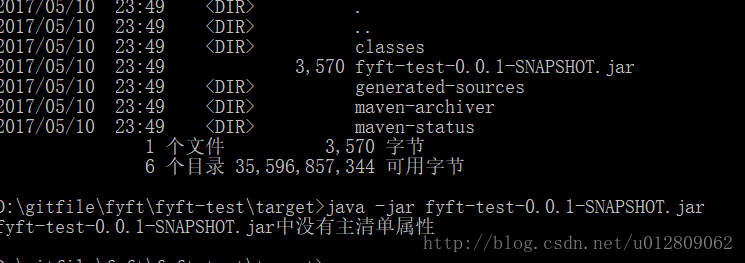
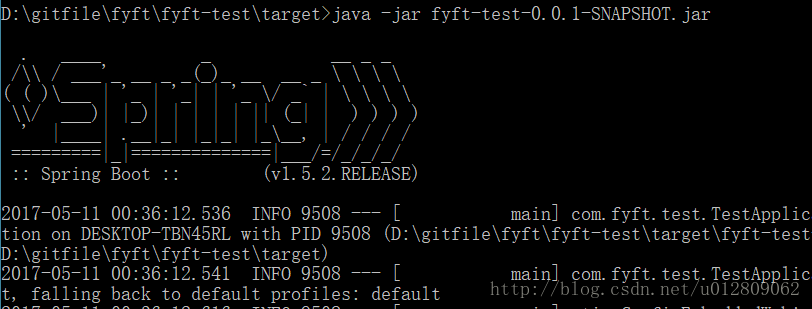

<!DOCTYPE html>
<html>
  <!DOCTYPE html>
<html lang="zh-CN">
<head><meta name="generator" content="Hexo 3.9.0">
  <meta http-equiv="content-type" content="text/html; charset=utf-8">
  <meta http-equiv="X-UA-Compatible" content="IE=Edge,chrome=1">
  
  <title>创建一个Spring Boot工程 - zgshen&#39;s note</title>
  <meta name="viewport" content="width=device-width, initial-scale=1.0, maximum-scale=1.0, user-scalable=0">
  
  <meta name="keywords" content="web框架">
  
  
    <link rel="shortcut icon" type="image/x-icon" href="/favicon.ico?v=1.02">
  
  
    <link rel="alternate" href="/atom.xml " title="zgshen&#39;s note" type="application/atom+xml">
  

  <link rel="stylesheet" href="/css/style.css">
</head></html>
  <body>
    <div class="container">
      <header class="header">
  <div class="blog-title">
    <a href="/" class="logo">zgshen&#39;s note</a>
    <div class="subtitle"></div>
  </div>
  <nav class="navbar">
    <ul class="menu">
      
        <li class="menu-item">
          <a href="/" class="menu-item-link">主页</a>
        </li>
      
        <li class="menu-item">
          <a href="/about" class="menu-item-link">关于</a>
        </li>
      
        <li class="menu-item">
          <a href="https://www.google.com/search?q=site:zguishen.com/" class="menu-item-link">搜索</a>
        </li>
      
    </ul>
  </nav>
</header>
<article class="post">
  <div class="post-title">
    <h1 class="article-title">创建一个Spring Boot工程</h1>
  </div>
   <div class="post-meta">
    <span class="post-time">2017-05-10</span>
  </div>
  <div class="post-content">
    <blockquote>
<p>在搭建传统的SpringMVC项目或其他Spring项目的的时候，我们通常都需要写一堆与Spring整合的xml配置文件，过程繁琐复杂不说，而且容易出错。为了简化开发，Spring Boot应运而生。<br>Spring Boot可以创建独立运行的基于Spring的应用，并且大多数时候只需编写少量的配置。能独立运行的原因是Spring Boot项目本身嵌入了Tomcat等其他web容器插件，详细介绍看官网<a href="http://projects.spring.io/spring-boot/。" target="_blank" rel="noopener">http://projects.spring.io/spring-boot/。</a></p>
</blockquote>
<h3 id="创建一个Spring-Boot-项目"><a href="#创建一个Spring-Boot-项目" class="headerlink" title="创建一个Spring Boot 项目"></a>创建一个Spring Boot 项目</h3><p>1、pom.xml配置<br>(1)基本配置<br>这里使用Maven构建工程，根据官网的推荐，项目可继承于<code>spring-boot-starter-parent</code> 来管理工程。<a id="more"></a></p>
<figure class="highlight xml"><table><tr><td class="gutter"><pre><span class="line">1</span><br><span class="line">2</span><br><span class="line">3</span><br><span class="line">4</span><br><span class="line">5</span><br><span class="line">6</span><br><span class="line">7</span><br><span class="line">8</span><br><span class="line">9</span><br><span class="line">10</span><br><span class="line">11</span><br></pre></td><td class="code"><pre><span class="line"><span class="tag">&lt;<span class="name">parent</span>&gt;</span></span><br><span class="line">    <span class="tag">&lt;<span class="name">groupId</span>&gt;</span>org.springframework.boot<span class="tag">&lt;/<span class="name">groupId</span>&gt;</span></span><br><span class="line">    <span class="tag">&lt;<span class="name">artifactId</span>&gt;</span>spring-boot-starter-parent<span class="tag">&lt;/<span class="name">artifactId</span>&gt;</span></span><br><span class="line">    <span class="tag">&lt;<span class="name">version</span>&gt;</span>1.5.2.RELEASE<span class="tag">&lt;/<span class="name">version</span>&gt;</span></span><br><span class="line"><span class="tag">&lt;/<span class="name">parent</span>&gt;</span></span><br><span class="line"><span class="tag">&lt;<span class="name">dependencies</span>&gt;</span></span><br><span class="line">    <span class="tag">&lt;<span class="name">dependency</span>&gt;</span></span><br><span class="line">        <span class="tag">&lt;<span class="name">groupId</span>&gt;</span>org.springframework.boot<span class="tag">&lt;/<span class="name">groupId</span>&gt;</span></span><br><span class="line">        <span class="tag">&lt;<span class="name">artifactId</span>&gt;</span>spring-boot-starter-web<span class="tag">&lt;/<span class="name">artifactId</span>&gt;</span></span><br><span class="line">    <span class="tag">&lt;/<span class="name">dependency</span>&gt;</span></span><br><span class="line"><span class="tag">&lt;/<span class="name">dependencies</span>&gt;</span></span><br></pre></td></tr></table></figure>
<p>(2)如果不使用官方依赖<br>实际开发中我们可能想自己创建父工程来管理依赖，例如我们创建聚合工程时有自己的parent工程，那么我们在自己的父工程定义版本号，根据需要引入对应的包。<br><figure class="highlight xml"><table><tr><td class="gutter"><pre><span class="line">1</span><br><span class="line">2</span><br><span class="line">3</span><br><span class="line">4</span><br><span class="line">5</span><br><span class="line">6</span><br><span class="line">7</span><br><span class="line">8</span><br><span class="line">9</span><br><span class="line">10</span><br><span class="line">11</span><br><span class="line">12</span><br><span class="line">13</span><br><span class="line">14</span><br><span class="line">15</span><br></pre></td><td class="code"><pre><span class="line"><span class="comment">&lt;!-- 版本号 --&gt;</span></span><br><span class="line"><span class="tag">&lt;<span class="name">properties</span>&gt;</span></span><br><span class="line">	<span class="tag">&lt;<span class="name">project.build.sourceEncoding</span>&gt;</span>UTF-8<span class="tag">&lt;/<span class="name">project.build.sourceEncoding</span>&gt;</span></span><br><span class="line">	<span class="tag">&lt;<span class="name">spring.version</span>&gt;</span>1.5.2.RELEASE<span class="tag">&lt;/<span class="name">spring.version</span>&gt;</span></span><br><span class="line"><span class="tag">&lt;/<span class="name">properties</span>&gt;</span></span><br><span class="line"></span><br><span class="line"><span class="tag">&lt;<span class="name">dependencyManagement</span>&gt;</span></span><br><span class="line">   <span class="tag">&lt;<span class="name">dependencies</span>&gt;</span>	</span><br><span class="line">   		<span class="tag">&lt;<span class="name">dependency</span>&gt;</span></span><br><span class="line">	  	  <span class="tag">&lt;<span class="name">groupId</span>&gt;</span>org.springframework.boot<span class="tag">&lt;/<span class="name">groupId</span>&gt;</span></span><br><span class="line">		  <span class="tag">&lt;<span class="name">artifactId</span>&gt;</span>spring-boot-starter-web<span class="tag">&lt;/<span class="name">artifactId</span>&gt;</span></span><br><span class="line">		  <span class="tag">&lt;<span class="name">version</span>&gt;</span>$&#123;spring.version&#125;<span class="tag">&lt;/<span class="name">version</span>&gt;</span></span><br><span class="line">	    <span class="tag">&lt;/<span class="name">dependency</span>&gt;</span></span><br><span class="line">    <span class="tag">&lt;/<span class="name">dependencies</span>&gt;</span></span><br><span class="line"><span class="tag">&lt;<span class="name">dependencyManagement</span>&gt;</span></span><br></pre></td></tr></table></figure></p>
<p>2、编写应用入口类<br><figure class="highlight java"><table><tr><td class="gutter"><pre><span class="line">1</span><br><span class="line">2</span><br><span class="line">3</span><br><span class="line">4</span><br><span class="line">5</span><br><span class="line">6</span><br><span class="line">7</span><br><span class="line">8</span><br><span class="line">9</span><br><span class="line">10</span><br><span class="line">11</span><br><span class="line">12</span><br><span class="line">13</span><br><span class="line">14</span><br><span class="line">15</span><br><span class="line">16</span><br><span class="line">17</span><br><span class="line">18</span><br><span class="line">19</span><br><span class="line">20</span><br></pre></td><td class="code"><pre><span class="line"><span class="keyword">package</span> com.fyft.test;</span><br><span class="line"></span><br><span class="line"><span class="keyword">import</span> org.springframework.boot.SpringApplication;</span><br><span class="line"><span class="keyword">import</span> org.springframework.boot.autoconfigure.SpringBootApplication;</span><br><span class="line"></span><br><span class="line"><span class="comment">/**</span></span><br><span class="line"><span class="comment"> *&lt;p&gt;Title: TestApplication.java&lt;/p&gt;</span></span><br><span class="line"><span class="comment"> *&lt;p&gt;Description: TODO&lt;/p&gt;</span></span><br><span class="line"><span class="comment"> *&lt;p&gt;CreateDate: 2017年5月10日&lt;/p&gt;</span></span><br><span class="line"><span class="comment"> *<span class="doctag">@author</span> shen</span></span><br><span class="line"><span class="comment"> *<span class="doctag">@version</span> v1.0</span></span><br><span class="line"><span class="comment"> */</span></span><br><span class="line"><span class="meta">@SpringBootApplication</span></span><br><span class="line"><span class="keyword">public</span> <span class="class"><span class="keyword">class</span> <span class="title">TestApplication</span> </span>&#123;</span><br><span class="line">	</span><br><span class="line">	<span class="function"><span class="keyword">public</span> <span class="keyword">static</span> <span class="keyword">void</span> <span class="title">main</span><span class="params">(String[] args)</span> </span>&#123;</span><br><span class="line">		SpringApplication.run(TestApplication<span class="class">.<span class="keyword">class</span>, <span class="title">args</span>)</span>;</span><br><span class="line">	&#125;</span><br><span class="line">	</span><br><span class="line">&#125;</span><br></pre></td></tr></table></figure></p>
<p>直接执行此主函数项目就启动了，默认的端口是8080，如果需要改变端口可以在此类实现<code>EmbeddedServletContainerCustomizer</code> 接口，这个接口包含内置Servlet容器的一些配置，例如设置访问端口为8003<br><figure class="highlight java"><table><tr><td class="gutter"><pre><span class="line">1</span><br><span class="line">2</span><br><span class="line">3</span><br><span class="line">4</span><br><span class="line">5</span><br><span class="line">6</span><br><span class="line">7</span><br><span class="line">8</span><br><span class="line">9</span><br><span class="line">10</span><br><span class="line">11</span><br><span class="line">12</span><br><span class="line">13</span><br></pre></td><td class="code"><pre><span class="line"><span class="meta">@SpringBootApplication</span></span><br><span class="line"><span class="keyword">public</span> <span class="class"><span class="keyword">class</span> <span class="title">TestApplication</span> <span class="keyword">implements</span> <span class="title">EmbeddedServletContainerCustomizer</span></span>&#123;</span><br><span class="line">	</span><br><span class="line">	<span class="function"><span class="keyword">public</span> <span class="keyword">static</span> <span class="keyword">void</span> <span class="title">main</span><span class="params">(String[] args)</span> </span>&#123;</span><br><span class="line">		SpringApplication.run(TestApplication<span class="class">.<span class="keyword">class</span>, <span class="title">args</span>)</span>;</span><br><span class="line">	&#125;</span><br><span class="line"></span><br><span class="line">	<span class="meta">@Override</span></span><br><span class="line">	<span class="function"><span class="keyword">public</span> <span class="keyword">void</span> <span class="title">customize</span><span class="params">(ConfigurableEmbeddedServletContainer config)</span> </span>&#123;</span><br><span class="line">		config.setPort(<span class="number">8003</span>);</span><br><span class="line">	&#125;</span><br><span class="line">	</span><br><span class="line">&#125;</span><br></pre></td></tr></table></figure></p>
<h3 id="创建Controller类"><a href="#创建Controller类" class="headerlink" title="创建Controller类"></a>创建Controller类</h3><p>要让Controller被扫描到，必须放在主入口类 <code>TestApplication</code> 的同级目录或下级目录，这样才能被扫描到，注解才会生效。<br>其他的带注解类都是一样的逻辑， Spring Boot 默认扫描入口启动类所在包之下的目录。</p>
<h3 id="打包部署启动"><a href="#打包部署启动" class="headerlink" title="打包部署启动"></a>打包部署启动</h3><p>Spring Boot工程直接打成jar包就行了，如果工程是要跑在外部web容器的，也可以打成war包发布，这需要修改一些配置，这里先不做介绍。<br>在eclipse上直接用maven打包就行，输入 <code>clean package</code> 命令，勾上<code>Skip Tests</code> 忽略测试就行。</p>
<p>在dos下cd到jar包目录下执行 <code>java -jar xx.jar</code>  启动工程，出现一个错误<br></p>
<p>原因是 maven 自身打包生成的目录结构和文件和 Spring Boot 需要的有所不同，需要在pom.xml加上一段配置，使用 <code>spring-boot-maven-plugin</code> 来打包<br><figure class="highlight xml"><table><tr><td class="gutter"><pre><span class="line">1</span><br><span class="line">2</span><br><span class="line">3</span><br><span class="line">4</span><br><span class="line">5</span><br><span class="line">6</span><br><span class="line">7</span><br><span class="line">8</span><br><span class="line">9</span><br><span class="line">10</span><br><span class="line">11</span><br><span class="line">12</span><br><span class="line">13</span><br><span class="line">14</span><br><span class="line">15</span><br></pre></td><td class="code"><pre><span class="line"><span class="tag">&lt;<span class="name">build</span>&gt;</span></span><br><span class="line">	 <span class="tag">&lt;<span class="name">plugins</span>&gt;</span></span><br><span class="line">		<span class="tag">&lt;<span class="name">plugin</span>&gt;</span></span><br><span class="line">			<span class="tag">&lt;<span class="name">groupId</span>&gt;</span>org.springframework.boot<span class="tag">&lt;/<span class="name">groupId</span>&gt;</span></span><br><span class="line">			<span class="tag">&lt;<span class="name">artifactId</span>&gt;</span>spring-boot-maven-plugin<span class="tag">&lt;/<span class="name">artifactId</span>&gt;</span></span><br><span class="line">            <span class="tag">&lt;<span class="name">executions</span>&gt;</span></span><br><span class="line">                <span class="tag">&lt;<span class="name">execution</span>&gt;</span></span><br><span class="line">                    <span class="tag">&lt;<span class="name">goals</span>&gt;</span></span><br><span class="line">                        <span class="tag">&lt;<span class="name">goal</span>&gt;</span>repackage<span class="tag">&lt;/<span class="name">goal</span>&gt;</span></span><br><span class="line">                    <span class="tag">&lt;/<span class="name">goals</span>&gt;</span></span><br><span class="line">                <span class="tag">&lt;/<span class="name">execution</span>&gt;</span></span><br><span class="line">            <span class="tag">&lt;/<span class="name">executions</span>&gt;</span></span><br><span class="line">		<span class="tag">&lt;/<span class="name">plugin</span>&gt;</span> </span><br><span class="line">	 <span class="tag">&lt;/<span class="name">plugins</span>&gt;</span></span><br><span class="line"><span class="tag">&lt;/<span class="name">build</span>&gt;</span></span><br></pre></td></tr></table></figure></p>
<p>若上面的dos正cd到target目录下，须退出此目录，在打包编译时会删除一次target目录，若不退出将会包无法删除此目录，因为你正打开它。<br>再次执行<code>java -jar</code> 命令启动成功</p>
<p></p>

  </div>
  <div class="post-footer">
    
      <ul class="post-tag-list"><li class="post-tag-list-item"><a class="post-tag-list-link" href="/tags/web框架/">web框架</a></li></ul>
    

    <a href="#top" class="top">返回顶部</a>
  </div>
</article>
<footer>
  &copy; 2021
  <span class="author">
    zguishen
  </span>
</footer>
    </div>
	<script async src="https://www.googletagmanager.com/gtag/js?id=GA_MEASUREMENT_ID"></script>
	<script>
	  window.dataLayer = window.dataLayer || [];
	  function gtag(){dataLayer.push(arguments);}
	  gtag('js', new Date());
	  gtag('config', 'UA-106347761-1');
	</script>
  </body>
</html>